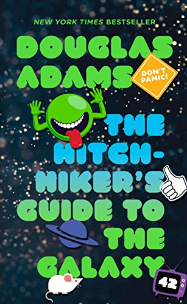

Featured Books
Ready Player One || Ernest Cline

The Hitch-Hicker's Guide To The Galaxy || Douglas Adams
The Martian || Andy Weir
News
- John Smith Performance - May 30th
- The one and only John Smith will be coming by the Library May the 30th to sign copies of his new book "My Life as John". The function will be held from 3pm to 5pm.
- Bake Sale - April 6th
- The library will be hosting its annual bake sale April the 6th from 8am to 5pm to raise money to support the Global Education Fund.
- Magic Show - May 14th
- The library will be hosting a marvelous magic show! May 14th the Marvelous Martin will bring illusions and mysteries to your local library from 1pm to 3pm.
Social Media
Programs
- Book Club
- Weekly Meetings in the library where we read one book every month and during meetings we discuss the book we read. Meetings are every week on Thursdays from 2-4pm.
- Book Bowl
- Participating teams read a list of several books, train to remember the story details and then battle it out against other teams. Librarians ask progressively harder questions.
- Family Game Night
- Invite families to bring a game to share and gather with others to play.This is a great winter-time event and a fun intergenerational program.